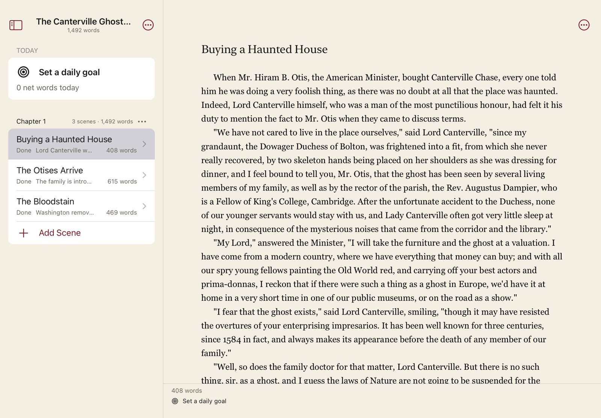
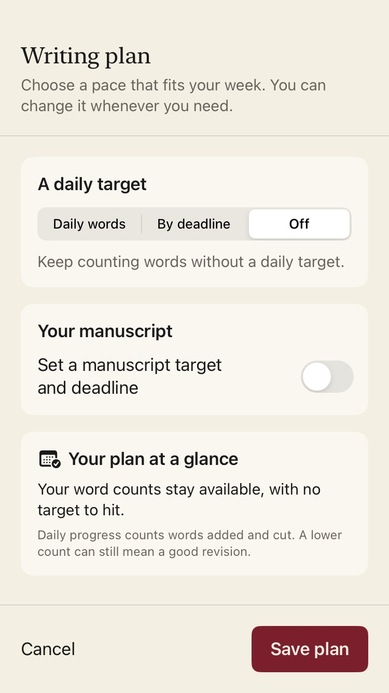

Write your novel or play, scene by scene.
Tackle each scene & keep the big picture in view.
Pick a scene from the outline. Click the highlighted phrase to read its comment.
Oscar Wilde’s The Canterville Ghost (1906), from Project Gutenberg. Scene titles, synopses and comments are the sample’s, not Wilde’s.
Writing is hard,
the right tools can help
Plays and novels, prose and verse
Write a novel or a play. Type prose or verse in either.
Book styling
Formatting built to make your prose feel like it’s bound in leather with that unmistakable smell.
The Manuscript view
Your whole project shown all together. Each chapter and section sequentially like you would find it in the real world. Make it feel real while you’re working on it.
A board of chapters and scenes
See the whole project broken down visually. A board of chapters and their scenes; rearrange them, reorder them, see through-lines and filter to help organize your project.
Characters
Log your characters. Names and aliases keep them tracked with tags throughout your work as you bring their stories to life.
Notes
Marginalia is where ideas are born. Notes are first class for each character, location, and arc you create. Throw in pictures and text to keep the inspiration flowing.
Comments
Not done with a thought? Leave a note for your future self. Comment and annotate as you go to help yourself revise.
Versions
We all need a second take on a section, or maybe a couple takes. Versioning keeps you organized and highlights the differences so you land on the best iteration.
A writing plan
Sometimes numbers help too. Set deadlines, show progress, and calculate daily word counts to reach your goals.
Find and replace everything
Search across your prose, notes, and comments to find what you need and fix it everywhere.
Bring Rozdział
with you
Mobile support keeps you writing and revising on the train, plane, or bus. Or possibly just the couch.




Your writing
is yours.
No login, no ads, no subscription.
Questions
When can I try it?
Not yet. Mac needs macOS 15; iPhone and iPad need iOS 17.
Does it work offline?
Yes, by design.
Does it sync?
Bring your own cloud vendor and drop the files for automatic syncing. Mobile apps are designed with iCloud in mind.
Does it have AI?
Nope. No LLMs to be found in this app.
Will it slow down on a long novel?
Short answer: no. Long answer: we built Rozdział to run on minimum specs of modern hardware while staying performant on written works bigger than the Bible.

Buying a Haunted House
When Mr. Hiram B. Otis, the American Minister, bought Canterville Chase, every one told him he was doing a very foolish thing, as there was no doubt at all that the place was haunted. Indeed, Lord Canterville himself, who was a man of the most punctilious honour, had felt it his duty to mention the fact to Mr. Otis when they came to discuss terms.
"We have not cared to live in the place ourselves," said Lord Canterville, "since my grandaunt, the Dowager Duchess of Bolton, was frightened into a fit, from which she never really recovered, by two skeleton hands being placed on her shoulders as she was dressing for dinner, and I feel bound to tell you, Mr. Otis, that the ghost has been seen by several living members of my family, as well as by the rector of the parish, the Rev. Augustus Dampier, who is a Fellow of King's College, Cambridge. After the unfortunate accident to the Duchess, none of our younger servants would stay with us, and Lady Canterville often got very little sleep at night, in consequence of the mysterious noises that came from the corridor and the library."
"My Lord," answered the Minister, "I will take the furniture and the ghost at a valuation. I have come from a modern country, where we have everything that money can buy; and with all our spry young fellows painting the Old World red, and carrying off your best actors and prima-donnas, I reckon that if there were such a thing as a ghost in Europe, we'd have it at home in a very short time in one of our public museums, or on the road as a show."
"I fear that the ghost exists," said Lord Canterville, smiling, "though it may have resisted the overtures of your enterprising impresarios. It has been well known for three centuries, since 1584 in fact, and always makes its appearance before the death of any member of our family."
"Well, so does the family doctor for that matter, Lord Canterville. But there is no such thing, sir, as a ghost, and I guess the laws of Nature are not going to be suspended for the British aristocracy."
"You are certainly very natural in America," answered Lord Canterville, who did not quite understand Mr. Otis's last observation, "and if you don't mind a ghost in the house, it is all right. Only you must remember I warned you."